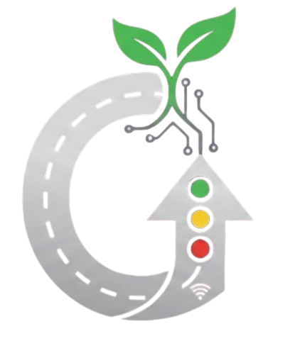

Memuat GreenFlow…
GREEN
FLOW
DASHBOARD
Memuat data…
LOCATION
Semua Lokasi
Status Lalu Lintas
–
Update Terakhir = – detik lalu
Jumlah Kendaraan
–
Program Lampu Saat Ini
MERAH
–
KUNING
–
HIJAU
–
Waktu & Tanggal
–
–
Kejadian Padat/Macet per Jam
Hari ini
Kemarin
7 Hari Terakhir
Memuat data grafik…
Kamera CCTV
Fitur live-view kamera tidak tersedia di versi hosting statis ini (offline) — fitur ini membutuhkan server backend yang selalu aktif. Data lalu lintas & grafik di atas tetap berjalan normal karena diambil langsung dari Supabase.
Riwayat Data Terbaru
Waktu
Lokasi
Kendaraan (jalur / total)
Status
Belum ada data